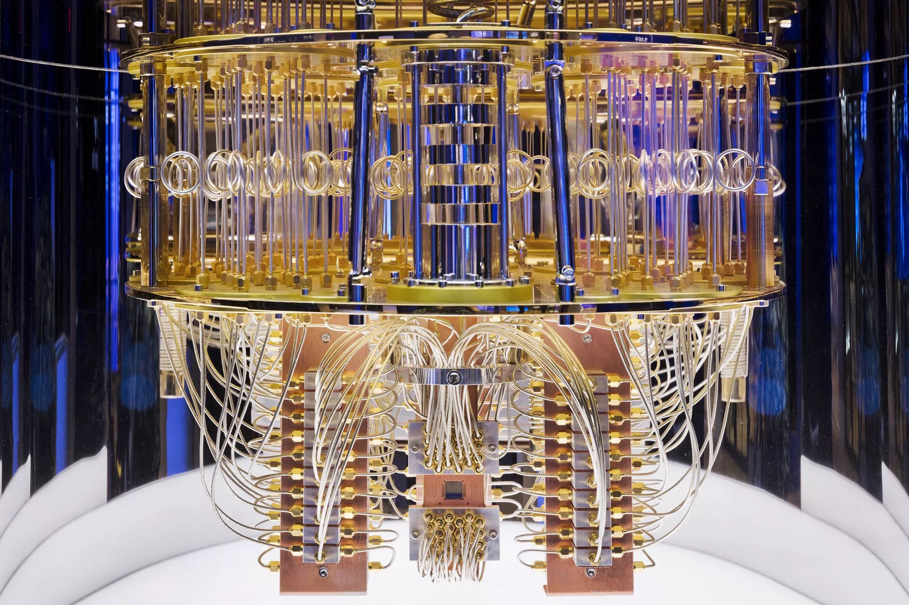
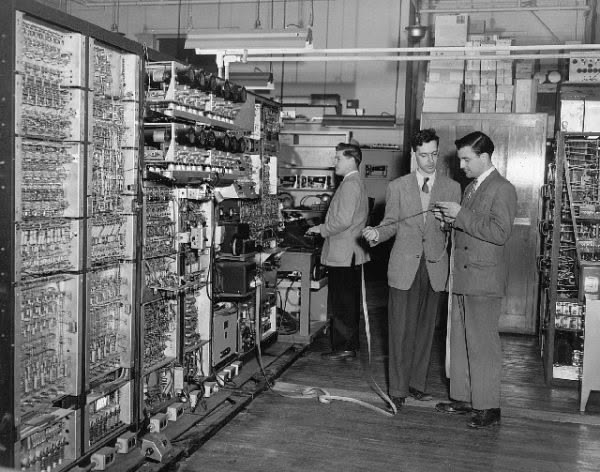

.png)


Em 1981, Richard Feynman apresentou a primeira proposta de utilizar um fenômeno quântico para executar rotinas computacionais. Foi numa palestra apresentada na Primeira Conferência de Computação Física no MIT. Ele mostrou que um computador tradicional levaria um tempo extremamente longo para simular um simples experimento de física quântica. Por outro lado, sistemas quânticos simples podem executar enormes quantidades de cálculos num curto espaço de tempo. Poderia ser possível utilizar essa capacidade para se calcular algo útil.

David Deutsch na Universidade de Oxford, descreveu o primeiro computador quântico universal. Exatamente como uma Máquina de Turing pode simular outra máquina de Turing eficientemente, um computador quântico universal é capaz de simular o funcionamento de outro computador quântico com complexidade, no máximo, polinomial. Isso fez crescer a esperança de que um dispositivo simples seja capaz de executar muitos algoritmos quânticos diferentes.

O primeiro computador quântico experimental da história foi demonstrado em 1999, por pesquisadores como Isaac Chuang, Neil Gershenfeld e Mark Kubinec. Ele utilizava técnicas de ressonância magnética nuclear (RMN) e possuía apenas dois qubits. Seu funcionamento demonstrou que era possível realizar cálculos utilizando princípios da mecânica quântica. Esse experimento foi um marco importante, pois mostrou que a computação quântica poderia sair da teoria e se tornar realidade, abrindo caminho para os computadores quânticos modernos.